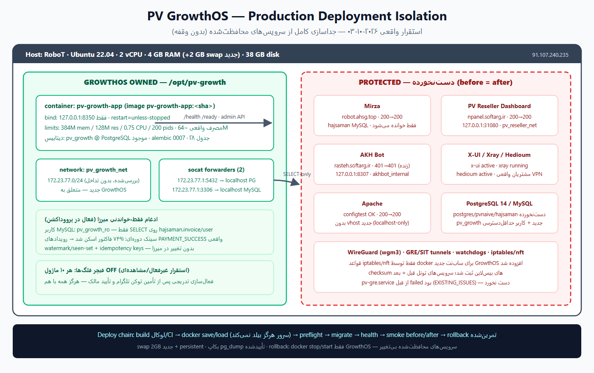
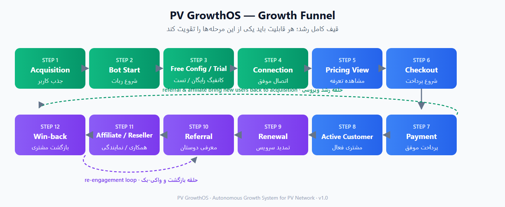
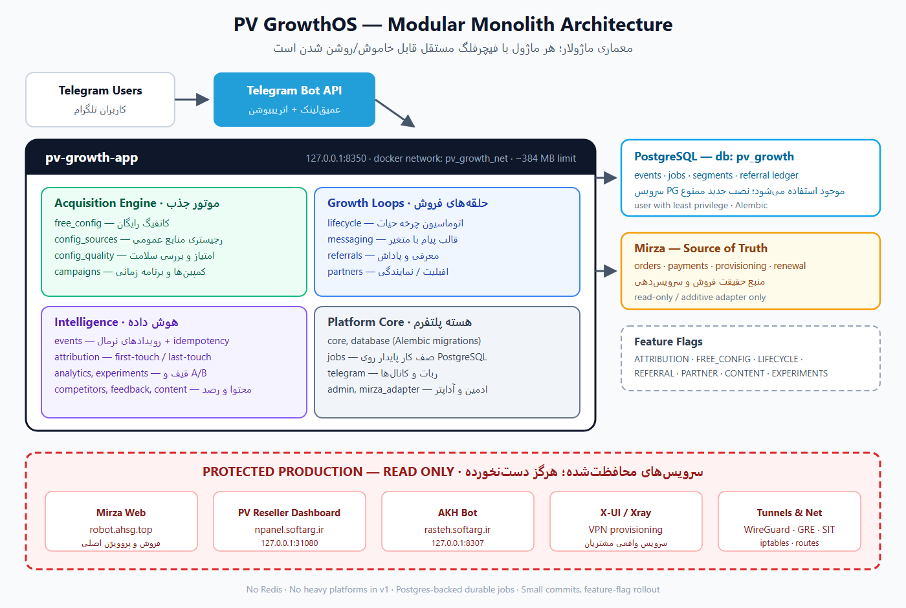
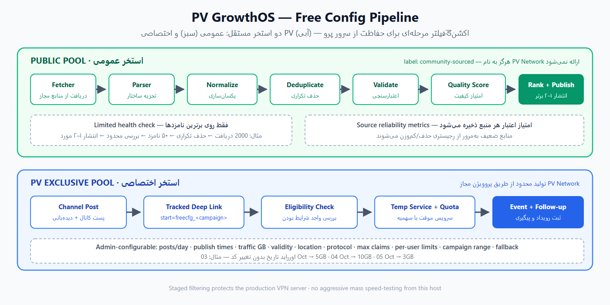
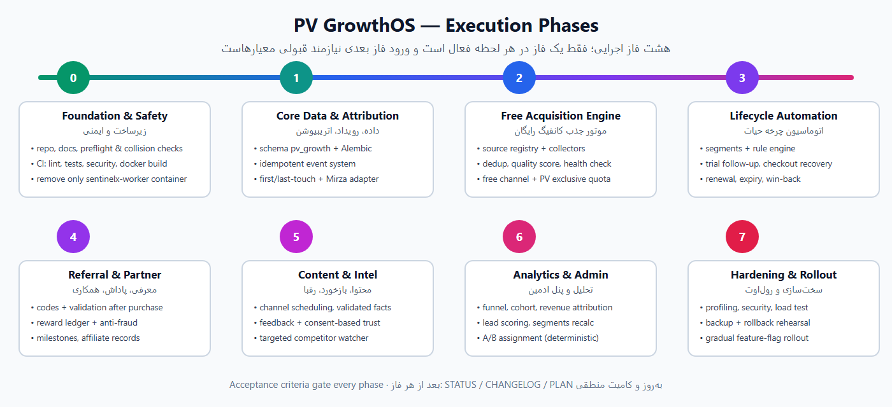

PV GrowthOS یک سیستم خودکارسازی رشد است که روی همان سرور پرووداکشن زندهی VPN شبکه PV مستقر میشود — سروری که همین حالا مشتریان واقعی روی آن سرویس دارند و سرویسهای فروش (میرزا)، پنل نمایندگی، ربات AKH و زیرساخت تونلها روی آن فعالاند. فلسفه طراحی این پروژه یک جمله است: رشد فروش با کمترین دخالت دستی، بدون به خطر انداختن حتی یک سرویس موجود.
سه تصمیم بنیادین، کل پروژه را تعریف میکنند:
این نسخه گزارش بعد از استقرار واقعی روی سرور اصلی (هاست RoboT) تنظیم شده است. جدول زیر دقیقاً مشخص میکند چه چیزی «طراحیشده»، چه چیزی «پیادهسازیشده»، چه چیزی «مستقرشده» و چه چیزی «فعال» است — و چه چیزهایی فقط به تصمیم/اعتبار مالک وابستهاند.
| قلمرو | وضعیت | شواهد / جزئیات |
|---|---|---|
| بکاند کامل (۲۳ ماژول) | مستقر ✓ | کانتینر pv-growth-app روی 127.0.0.1:8350 · سقف ۳۸۴M/۰٫75CPU · مصرف واقعی ~۶۴M |
| دیتابیس pv_growth | مستقر ✓ | روی PostgreSQL 14 موجود · مایگریشن 0007 · ۲۸ جدول · کاربر حداقلدسترسی |
| اتصال فقط-خواندنی میرزا | فعال ✓ | نقش pv_growth_ro با SELECT فقط روی invoice/user · سینک دورهای · ۷۴۹۱ فاکتور شناسایی؛ رویدادهای پرداخت واقعی در حال ثبت |
| تحلیل و داشبورد ادمین | فعال ✓ | قیف/درآمد واقعی · صف کارها · احراز هویت توکنی (بدون توکن: 401) |
| فیچر فلگها (۱۰ ماژول) | مستقر / خاموش عمدی | مرحله مشاهدهای؛ فعالسازی تدریجی طبق برنامه رولاوت — هرگز همه با هم |
| زمانبند و صف کارها | فعال ✓ | هر ۱۵ ثانیه · اجرای idempotent · خطاها ایزوله با backoff |
| ربات تلگرام / انتشار کانال | پیادهسازیشده / غیرفعال | وبهوک تا دریافت توکن اختصاصی ربات 503 میدهد (توکن X-UI هرگز بازاستفاده نمیشود) — BLOCKERS.md |
| پیامهای چرخه حیات / پاداش معرفی | پیادهسازی و تستشده / خاموش | با فلگ مربوطه پس از تأمین توکن و تأیید مالک فعال میشوند |
| سرویسهای محافظتشده | بدون تغییر ✓ | میرزا 200→200 · پنل 200→200 · AKH 401→401 · Apache/X-UI/Xray/Hedioum/تونلها: قبل = بعد (مستند در docs/deployment-audits/) |
| ایمنی سرور | افزودهشده ✓ | swap ۲GB جدید + persistent · بکاپ pg_dump تأییدشده · تمرین رولبک زنده · اسکن secret پاک |
| تست و CI | سبز ✓ | ۷۹ تست · GitHub Actions سبز (ماتریس SQLite+PostgreSQL، مایگریشن، pip-audit، بیلد داکر) |

هر قابلیتی که در این پروژه پیاده شود باید بهوضوح حداقل یکی از اینها را تقویت کند: جذب کاربر واجد شرایط، افزایش تبدیل تستبهپرداخت، افزایش تمدید، بازگرداندن کاربر ازدسترفته، افزایش معرفی، رشد کانال نمایندگی/افیلیت، بهبود اتریبیوشن یا بهبود خودکارسازی عملیاتی. قابلیتهایی که صرفاً «جالب» هستند پیاده نمیشوند.

| مرحله | تعریف | موتور مسئول در GrowthOS |
|---|---|---|
| جذب کاربر (Acquisition) | ورود کاربر از منبعی ردیابیشده (پست کانال، معرفی، سئو، کمپین) | اتریبیوشن + کمپینها + کانفیگ رایگان |
| شروع ربات | اولین /start با پارامتر start=<source> | رویداد BOT_STARTED |
| کانفیگ رایگان / تست | دریافت کانفیگ عمومی یا اختصاصی PV | موتور جذب (فصل ۸) |
| اتصال | اتصال موفق و مصرف واقعی ترافیک | رویداد TRIAL_CONNECTED |
| مشاهده تعرفه ← پرداخت | ورود به قیف فروش میرزا و تسویه موفق | آداپتر میرزا (فقط-خواندنی) |
| مشتری فعال ← تمدید | سرویس فعال و تمدیدهای بعدی | چرخه حیات + یادآوری تمدید |
| معرفی / افیلیت / وینبک | رشد ویروسی و بازگشت مشتری ازدسترفته | موتور معرفی + وینبک |
این سرور یک سرور زنده با مشتریان واقعی است. مشخصات سختافزاری و نرمافزاری بر اساس ممیزی کامل:
| جزء | مقدار |
|---|---|
| سیستمعامل | Ubuntu 22.04 |
| CPU / RAM | ۲ vCPU / حدود ۴ گیگابایت (بدون swap) |
| دیسک | حدود ۳۸ گیگابایت |
| نرمافزارهای موجود | Docker، Apache، MySQL، PostgreSQL 14، X-UI/Xray، تونلهای Hedioum و WireGuard/GRE/SIT |
| شبکههای داکر موجود | bridge (172.17.0.0/16) · pv_reseller_net (172.18.0.0/16) · akhbot_internal (172.19.0.0/16) |
| سرویس | مسیر / دامنه | کانتینر / بایندینگ | قید |
|---|---|---|---|
| میرزا | /var/www/html/mirzaprobotconfig · /var/www/mirza_pro · robot.ahsg.top | — | سیستم اصلی فروش و پروویژن؛ ممنوع: بازسازی، تغییر نام، مایگریشن، ریفکتور |
| پنل نمایندگی PV | /opt/pv-reseller · npanel.softarg.ir | pv-reseller-dashboard · 127.0.0.1:31080→3000 · pv_reseller_net | DO NOT TOUCH |
| ربات AKH | /opt/akhbot/app · rasteh.softarg.ir | akhbot-app · 127.0.0.1:8307→8000 · akhbot_internal | DO NOT TOUCH |
| زیرساخت VPN | X-UI، Xray، Hedioum، WireGuard، GRE، SIT، واچداگها | — | ممنوع: ip route، ip rule، iptables، nft، wg، ip tunnel، حذف اینترفیس، تغییر شبکه داکر |
| قلمرو | مقدار |
|---|---|
| ریشه استقرار | /opt/pv-growth |
| بایندینگ میزبان | 127.0.0.1:8350 | (هرگز 0.0.0.0:8350)
| شبکه داکر اختصاصی | pv_growth_net | — ترجیحاً 172.23.77.0/24
| مالکیت | فقط همین مسیر، کانتینرها، دیتابیس، شبکه و لاگهای خود سیستم |
قبل از ساخت شبکه، بررسی فقطخواندنیِ شبکههای داکر، روتهای IPv4، سابنتهای VPN/تونل و اینترفیسهای محلی انجام میشود. در صورت تداخلِ 172.23.77.0/24، یک سابنت آزاد انتخاب و تصمیم در ARCHITECTURE.md مستند میشود.

رانتایم اولیه pv-growth-app شامل API فریمورک FastAPI، ورکر سبک، زمانبند (اسکژولر)، یکپارچگی تلگرام و موتور کمپین است. مرزهای ماژولها داخلی اما صریح است تا جداسازی آتی ورکرها بدون بازطراحی ممکن باشد.
| ماژول | مسئولیت |
|---|---|
| core · database | پیکربندی، اتصال دیتابیس و مایگریشنها |
| events · attribution · analytics | رویدادها، اتریبیوشن first/last-touch و تحلیل قیف |
| mirza_adapter | دروازه امن به منبع حقیقت فروش (میرزا) |
| telegram · messaging | ربات، کانالها و قالبهای پیام با متغیر |
| free_config · config_sources · config_quality | خط تولید کانفیگ رایگان، رجیستری منابع و امتیازدهی کیفیت |
| campaigns · lifecycle · content | کمپینها، اتوماسیون چرخه حیات و موتور محتوا |
| referrals · partners | معرفی/پاداش و افیلیت/نمایندگی |
| competitors · feedback | رصد هدفمند رقبا و بازخورد مشتری |
| experiments · admin · jobs | آزمایش A/B قطعی، پنل ادمین و صف کار پایدار |
در نسخه اول، Redis لازم نیست؛ کارها روی PostgreSQL ذخیره و اجرا میشوند. هر کار این ویژگیها را دارد: زمانبندی، تعداد تلاش مجدد با استراتژی backoff، کلید یکتایی/idempotency، وضعیت، locked_at/locked_by، started_at/finished_at، جزئیات خطا و retry_after.
هر رویداد این فیلدها را دارد: event_id · event_type · actor/user · campaign · source · timestamp · idempotency key · metadata(JSON). قید امنیتی مهم: هیچ secret یا اعتبار VPN مشتری در متادیتای رویداد ذخیره نمیشود.
میرزا برای کاربران (در حد نیاز)، سفارشها، پرداختها، پروویژن، ساخت سرویس VPN و تمدید، منبع حقیقت باقی میماند. GrowthOS هیچ منطق پرداخت یا پروویژنی را duplicate نمیکند. ترتیب ترجیحی یکپارچهسازی:
اتریبیوشن first-touch و last-touch هر دو ذخیره میشوند و first-touch هرگز بازنویسی نمیشود. منبع از پارامتر دیپلینک start=<source> استخراج میشود:
| الگو | معنا |
|---|---|
| freecfg_<campaign> | پست کانفیگ رایگان یک کمپین |
| ref_<user> | لینک معرفی یک کاربر |
| partner_<partner> | لینک همکار/افیلیت |
| seo_<page> | ورود از صفحه سئو |
| channel_<campaign> · social_<campaign> | کمپین کانال یا شبکه اجتماعی |
برای هر منبع ردیابی میشود: source، campaign، medium، referrer، first/last_seen، bot_start، trial، purchase، revenue و درآمد تمدید — تا پاسخ سوال کلیدی «کدام منبع، مشتریِ باارزش میسازد؟» دادهمحور باشد.
کانال کانفیگ رایگان، موتور اصلی جذب سرنخ واجد شرایط است و از دو استخر کاملاً مستقل تغذیه میشود:

کانفیگهای عمومی از رجیستریِ ادارهشده توسط ادمین (منابع تأییدشده گیتهاب/تلگرام) جمع میشوند و از این خط تولید عبور میکنند:
کانفیگهای رایگانِ محدود با استفاده از پروویژن مجاز PV Network ساخته میشوند. ادمین بدون هیچ تغییر کد میتواند اینها را تنظیم کند:
اورراید تاریخ: مثلاً ۳ اکتبر ← ۵ گیگابایت، ۴ اکتبر ← ۱۰ گیگابایت، ۵ اکتبر ← ۳ گیگابایت — صرفاً با تنظیم، بدون تغییر کد. جریان ترجیحی تبدیل:
حالت «اشتراک عمومیِ کنترلشده» هم پشتیبانی میشود، اما مدل ترجیحیِ تبدیل، claim انفرادی است — چون اتصال کاربر به کمپین، سقف مصرف و هویت او قابل ردیابی و پیگیری است.
کانال رایگان نباید به بڑِ کانفیگ بیکیفیت تبدیل شود. ترکیب محتواییِ قابل تنظیم: کانفیگ عمومی، کانفیگ اختصاصی PV، نکته رفع اشکال، ابزار مفید شبکه/VPN، دعوت به خرید و کمپین معرفی — همه زمانبندمحور. ممنوع: کمیابی ساختگی، آپتایم جعلی و تعداد کاربر غیرواقعی.
قالبهای پیام با متغیر پارامتری میشوند:
قالبها بر اساس نیت جدا میشوند: جذب، آموزش، پیگیری تست، بازیابی خرید، تمدید، انقضا، وینبک، معرفی، همکاری و پشتیبانی.
موتور محتوا برای کانال رسمی PV و کانال کانفیگ رایگان، محتوای زمانبندیشده (آموزشی، وضعیت سرویس، کمپین خرید، کمپین معرفی) تولید و منتشر میکند. چرخه عمر هر رکورد محتوا:
اتوماسیون قانونمحور برای کل مسیر مشتری — از سرنخ خام تا مشتری راکد:
| وضعیت ماشینی | اقدام خودکار |
|---|---|
| ربات شروع شده ولی بدون تست | پیگیری جذب |
| تست ساخته شده ولی بدون اتصال | راهنمای اتصال |
| تست متصل شده ولی بدون خرید | پیشنهاد تبدیل |
| تسویه شروع شده ولی پرداختنشده | بازیابی خرید |
| اولین خرید | خوشآمد و فعالسازی |
| ۳ روز و ۱ روز قبل از انقضا | یادآوری تمدید پلهای |
| منقضی شده / مشتری غیرفعال | وینبک |
| مشتری ارزشمند · معرف موفق · نامزد همکاری | مسیرهای VIP و همکاری |
هر قانون این اجزا را دارد: trigger · delay · conditions · template · CTA · cooldown · max sends · stop conditions
کدهای معرفی یکتا، اتریبیوشن معرف، وضعیت pending، اعتبارسنجی، پاداش، تاریخچه پاداش و محافظت ضدتقلب. قاعده نام شکستناپذیر: هرگز فقط برای کلیک روی لینک پاداش داده نمیشود. مسیر ترجیحی اعتبارسنجی:
محافظتها: خودمعرفی، حسابهای تکراریِ قابلشناسایی، فارمینگ سریع و پردازش تکراری پاداش. مبلغ و نوع پاداش کاملاً قابل تنظیم است.
ماسکهای اختیاری (مثلاً ۱ معرفی معتبر ← پاداش A، ۳ ← پاداش B، ۵ ← پاداش C، ۱۰ ← پاداش D) بههمراه کمپینهای جدول امتیازات (leaderboard). همه مقادیر تجاری قابل تنظیم — هیچ عدد تجاری در کد هاردکد نمیشود.
چهار لایه متمایز: معرفی مشتری، افیلیت، همکاری و نمایندگی. برای هر همکار ذخیره میشود: کلیک، شروعها، تستها، سفارشها، فروش، درآمد، کمیسیون، کمیسیون در انتظار و کمیسیون تأییدشده. پنل نمایندگی موجود بازسازی نمیشود — یکپارچگی آن به فازهای بعدی موکول میشود و رباتهای وایتلیبل صرفاً بکلاگاند.
امتیازدهی کاملاً قابل تنظیم بر اساس سیگنالهایی مثل: شروع ربات، دریافت کانفیگ رایگان، اتصال تست، مشاهده تعرفه، شروع تسویه، خرید قبلی، معرفی و انقضای اخیر. استراتژی نهایی امتیازدهی و آستانههای سگمنت هرگز در منطق تجاری هاردکد نمیشوند — از پیکربندی میآیند.
سگمنتبندی باید همیشه قابل محاسبه مجدد باشد — یعنی عضویت در سگمنت تابعی قطعی از رویدادهاست، نه یک وضعیت دستی که کهنه میشود.
فقط هوشمندی هدفمند — نه خزنده اینترنتیِ بیکنترل. منابع عمومیِ رقبا که ادمین تنظیم کرده برای تغییرات قیمت، پیشنهاد تست، حجم ترافیک، لوکیشنها، کمپین معرفی، پلن جدید و پروموشنهای بزرگ رصد میشوند. برای هر تغییر ذخیره میشود: منبع، زمان مشاهده، فیلد تغییرکرده، مقدار قبلی، مقدار جدید و URL منبع. قیدهای ایمنی: هرگز با ترافیک VPN تداخل نمیکند، در نسخه اول بدون اتوماسیون مرورگر و با HTTP fetching سبک.
داشبورد ادمین باید این پرسشها را پاسخ دهد: کاربران از کجا آمدهاند؟ کدام پست کانفیگ رایگان به خرید میرسد؟ کدام کمپین تبدیل میشود؟ کدام منبع تمدید میسازد؟ کدام منبع معرفی درآمد میسازد؟ کدام پیام چرخه حیات به خرید ختم میشود؟ متریکهای حداقلی: کاربران، شروع ربات، تستها، claimهای رایگان، شروع تسویه، خریدها، نرخ تبدیل، درآمد، تمدیدها، نرخ تمدید، معرفیها، درآمد معرفی، درآمد وینبک و LTV (در صورت کفایت داده) — همه با کوئری قیف و کوهورتِ سبک روی PostgreSQL، بدون نصب پلتفرم سنگین.
حداقلی اما کارکردی — اولویت با عملکرد است نه طراحی. ادمین میتواند کمپینها، برنامه کانفیگ رایگان، رجیستری منابع، قالبها، قوانین اتوماسیون، قوانین معرفی، سوابق همکاران، فیچر فلگها و آزمایشها را مدیریت کند. داشبورد: سلامت سیستم، کارهای شکستخورده، رویدادهای اخیر، قیف فروش و عملکرد کمپین.
هر اتوماسیونِ خطرناک یا روبهمشتری، تا وقتی تستهای فازش قبول نشده غیرفعال شروع میکند. فعالسازی در فاز ۷ بهصورت تدریجی است — هرگز همه قابلیتها همزمان روشن نمیشوند.
| قید | مقدار |
|---|---|
| مصرف عادی رم | حدود ۲۵۰ تا ۴۰۰ مگابایت |
| سقف رم داکر | حدود ۳۸۴ مگابایت (مگر با پروفایل مستندشده) |
| سقف CPU | محافظهکارانه ۰٫۵۰ تا ۰٫۷۵ هسته |
| سقف تعداد پروسه (PIDs) | اعمال میشود تا ورکر سرور را اشباع نکند |
ممیزی نشان داده یک بیلد داکر تقریباً یک هسته CPU کامل را مصرف میکند. مسیر استاندارد:
CI شامل lint، تست واحد، تست یکپارچه، بررسی امنیتی و بیلد داکر است. اگر اعتبار رجیستری در دسترس نباشد، بلاکر ثبت و کار توسعه/تست ادامه مییابد — بیلد سنگینِ خاموش روی سرور تولیدی هرگز انجام نمیشود.
لاگ ساختاریافته سبک بههمراه: endpoint سلامت (health)، آمادگی (readiness)، متریک کارها، عمق صف، کارهای شکستخورده و خطاهای پردازش رویداد — با نمای CLI/ادمین برای بررسی سلامت. هیچ سوئیت مشاهدهپذیری سنگینی در نسخه اول نصب نمیشود.
مالک اعلام کرده این کانتینر لازم نیست: بدون پورت منتشرشده، روی شبکه bridge پیشفرض، بدون وابستگی Compose و بدون رابطه کشفشده با پنل نمایندگی یا ربات AKH. روش حذف:
PLAN.md تنها برنامه اجرایی پروژه است — برنامه رقیبی ساخته نمیشود.

| فاز | عنوان | محتوا | معیار پذیرش (خلاصه) |
|---|---|---|---|
| ۰ | زیرساخت و ایمنی | ساختار ریپو، مستندات، نقشه منابع سرور، preflight استقرار، چک تداخل، حذف فقط کانتینر sentinelx، محیط لوکال/توسعه، CI، روش بکاپ/rollback | تستها اجرا میشوند؛ CI کار میکند؛ هیچ منبع محافظتشدهای تغییر نکرده؛ چک تداخل پرووداکشن کار میکند؛ حذف sentinel به سرویسها آسیب نزده |
| ۱ | داده هسته / رویداد / اتریبیوشن / آداپتر میرزا | اسکیمای دیتابیس Growth، سیستم رویداد، مدلهای کاربر/منبع/کمپین، اتریبیوشن، آداپتر امن میرزا | رویداد ربات/کاربر ثبت میشود؛ منبع و first-touch ماندگارند؛ رویداد تکراری idempotent است؛ هیچ رگرسیون پرداخت/پروویژن |
| ۲ | موتور جذب رایگان | رجیستری منابع، جمعآورهای عمومی گیتهاب/تلگرام، پارسرها، حذف تکراری، امتیاز کیفیت، اعتبارسنجی سلامت محدود، زمانبند، انتشار کانال رایگان، مدل کمپین اختصاصی PV | دو پست زمانبندیشده تکراری نمیشوند؛ کانفیگ نامعتبر منتشر نمیشود؛ تنظیم سهمیه/تاریخ PV کار میکند؛ اتریبیوشن در جریان دیپلینک زنده میماند |
| ۳ | اتوماسیون فروش چرخه حیات | سگمنتها، موتور کار، قالب پیام، پیگیری تست، بازیابی تسویه، یادآوری تمدید، انقضا، وینبک | پیامها شرط توقف را رعایت میکنند؛ خریداران یادآور اشتباه نمیگیرند؛ idempotency و cooldown کار میکنند |
| ۴ | معرفی / ویروسی / همکاری | کدهای معرفی، اعتبارسنجی، دفتر پاداش، ضدسوءاستفاده، مایلاستونها، سوابق افیلیت، تبدیل همکار | خودمعرفی مسدود؛ پاداش تکراری ناممکن؛ پاداش فقط پس از تبدیل واجد شرایط |
| ۵ | محتوا / بازخورد / هوش رقابتی | زمانبندی کانال رسمی و رایگان، قالب محتوا، بازخورد/امتیاز، رصد تغییرات هدفمند رقبا | حقایق تجاری قابل جعل نیستند؛ زمانبند idempotent است؛ خطای رصد رقبا هرگز VPN/میرزا را تحت تاثیر قرار نمیدهد |
| ۶ | تحلیل / ادمین / آزمایش | رابط ادمین، قیف، تحلیل منبع، اتریبیوشن درآمد، تمدیدها، کوهورتها، امتیاز سرنخ، تخصیص A/B | ادمین میتواند منبع ← تست ← خرید ← تمدید را ردیابی کند؛ تحلیلها با رویدادها/سفارشهای پایه سازگارند |
| ۷ | سختسازی و رولاوت | پروفایل منابع، بازبینی امنیتی، اسکن وابستگی، تست بار، تأیید مایگریشن، تأیید بکاپ، تمرین rollback، رولاوت فیچرفلگ | اتوماسیون روبهمشتری بهتدریج فعال میشود — هرگز همه همزمان |
چرخه هر فاز در پنج گام اجرا میشود و در پایان هر فاز بهروزرسانی STATUS.md، CHANGELOG.md و PLAN.md بههمراه ثبت نتایج تست و یک کامیت منطقی انجام میشود. کامیتها کوچکاند و فورسپوش هرگز انجام نمیشود.
GrowthOS فقط مالک /opt/pv-growth، منابع داکر خودش، دیتابیس/کاربر خودش، شبکه اختصاصی، vhost آپاچیِ صریحاً مجازِ آینده و لاگهای خودش است — مالک هیچ منبع پرووداکشن موجودی نیست.
وجود کد بهتنهایی پایان پروژه نیست. نسخه ۱ کامل است وقتی سیستم بتواند خودکار این کارها را انجام دهد:
و دو شرط پایانی: عملیات بدون دخالت روزانهی دستی و ادامه normal عملکرد زیرساخت VPN موجود.